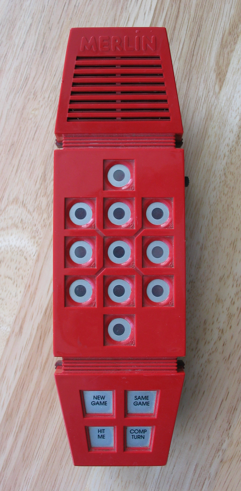
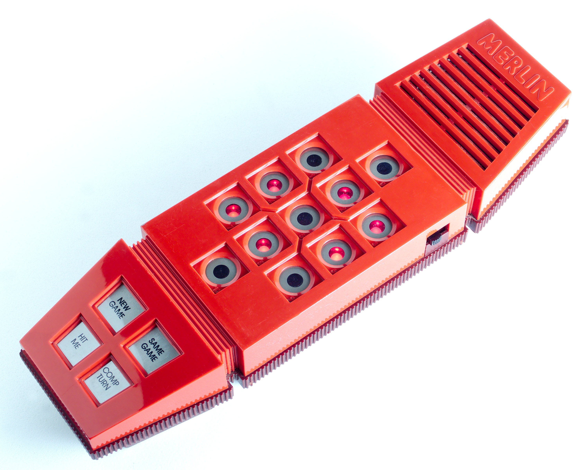
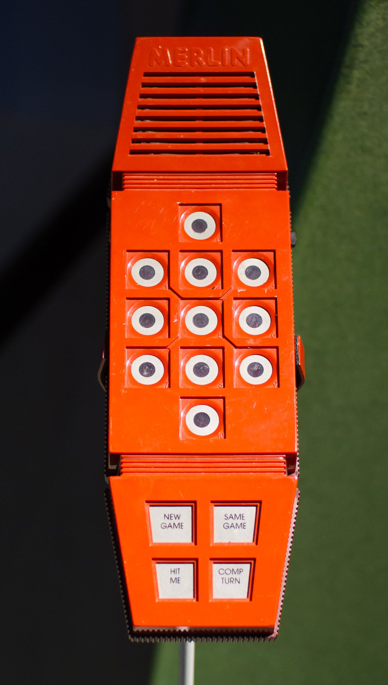

Parker Brothers Merlin
The toy that played games with you — eleven glowing keys that were both your input and its only screen

Overview
Merlin — full name Merlin The Electronic Wizard — is a handheld electronic game released by Parker Brothers in 1978 at around $25. Inside a red, phone-shaped plastic case about nine and a half inches long sit a Texas Instruments TMS1000 four-bit microcontroller, 48 bytes of RAM, a small speaker, and the whole of its interface: a matrix of eleven keys, each a button with a red LED inside. The keys are simultaneously the game's only display and its only input. Merlin communicates by lighting them in patterns; you answer by pressing them. A row of four control buttons below selects games.
The interaction model is the museum's point. These eleven dual-use keys support six games: Tic-Tac-Toe against the computer, Music Machine (each key plays a note and sequences can be recorded and played back — one of the earliest consumer digital sequencers), Echo (a Simon-style memory game), Blackjack 13 (the machine deals), Magic Square (a Lights Out-style pattern-reversal puzzle), and Mindbender, a Mastermind-like game in which the machine secretly picks a number and you deduce it by interrogation. Win, lose, or tie, Merlin answers in a vocabulary of twenty synthesized sounds. Children did not just play Merlin — they questioned it.
Merlin was a phenomenon. The Toy Manufacturers of America named it the best-selling toy SKU in America in 1980, when it sold 2.2 million units; lifetime sales passed five million, making it Parker Brothers' most successful product until Frogger in 1982. It was invented by Bob Doyle, a former NASA engineer with a Harvard PhD, with his wife Holly Doyle and brother-in-law Wendl Thomis; the case was drawn by Arthur Venditti. A 2004 Milton Bradley re-release kept the toy alive, and a 1995 sequel, Merlin: The 10th Quest, added a dungeon maze and nine fantasy games.
Deep dive
Merlin has no display separate from its input. Eleven LED-backlit buttons are the entire output surface — games are represented by which lights flash, in what order, and at what tempo. This is the same design inversion as the museum's Coleco Telstar Arcade (where the body is the controller), applied to output: the buttons are the display. A grid of lights you touch, in a 1978 toy.
Three of the six games — Tic-Tac-Toe, Blackjack 13, and Mindbender — cast the machine as an adversary with hidden state. In Mindbender the box picks a secret number and answers yes/no questions with lights. For millions of children this was the first time they argued with a computer rather than operated one. Designer Bob Doyle, coming from NASA systems work, said the goal was a game that 'wants to play with you.'
In Music Machine mode each key plays a note and the unit records sequences for playback — a step sequencer hiding in a toy store, contemporary with the earliest professional sequencers.
Merlin is richly documented: design patent USD256139 (Venditti, Kjellman, Doyle) covers the casing, the TMS1100 die is photographed in teardowns, and the Centre for Computing History and the Computer History Museum both hold units. The Handheld Museum preserves Bob Doyle's handmade prototypes, only some of which became production games.
Team & pioneers
- Bob Doyle. Lead designer; former NASA engineer with a Harvard PhD.
- Holly Doyle and Wendl Thomis. Co-inventors of the family design team.
- Arthur Venditti. Case designer, named on design patent USD256139 (also named the Nerf Ball).
- Samuel T. Kjellman. Hardware engineer named on the design patent.
- Parker Brothers. Publisher; CPG Products (General Mills) held the patent assignment.
Media

